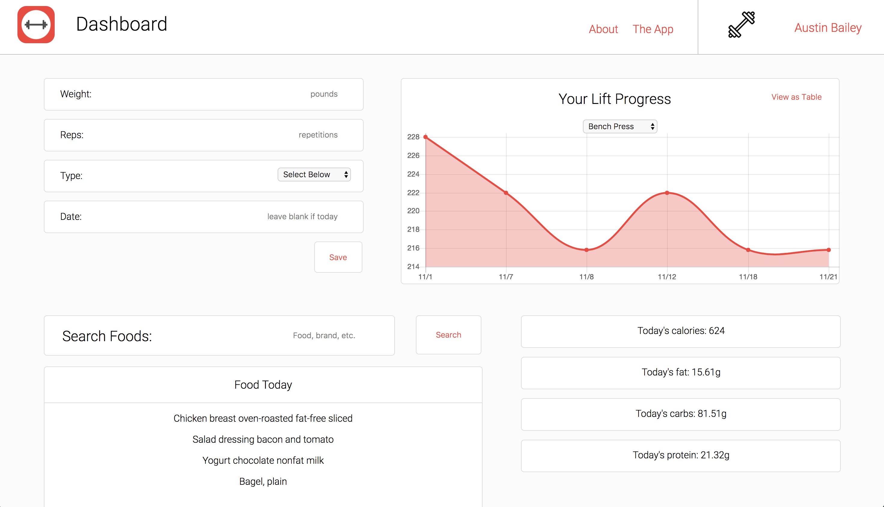
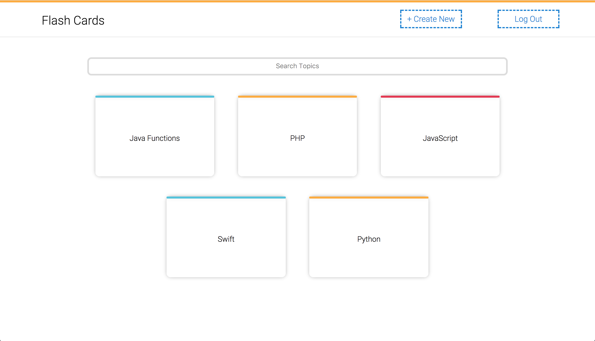
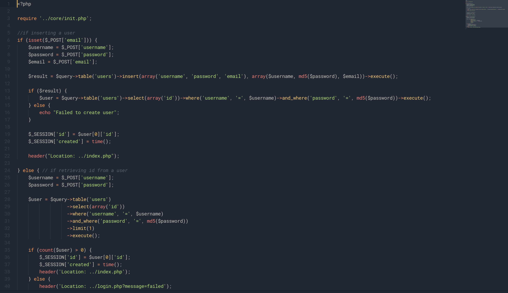
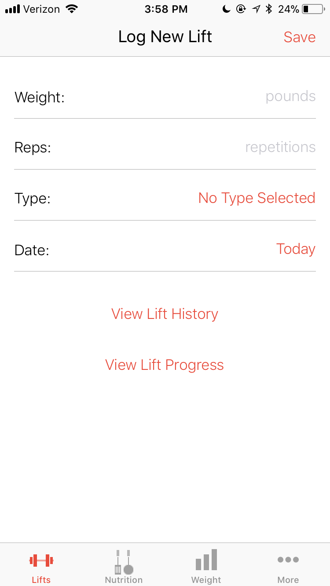
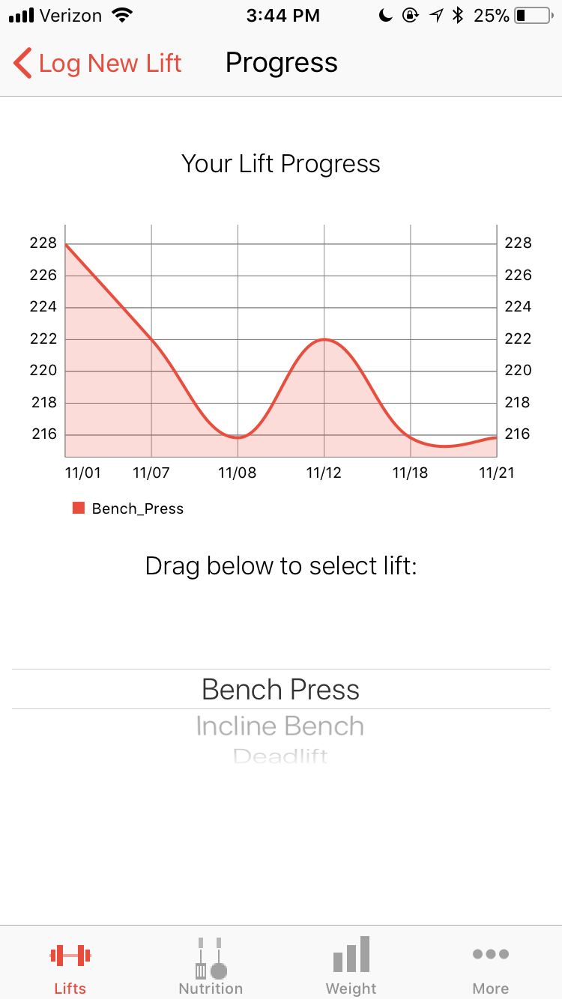

About
About
Contact GitHubI am a Computer Science major at Boston College, and I am looking to build my career as a software engineer. I am currently a research associate and software engineer at BC in the field of Virtual Reality, building software to make VR more acsessible to developers. Below are some of my personal projects that I have worked on in my free time. Click the images to go to the website/github repository.
Projects
LiftAppSite is a web app designed for users to quickly track fitness data by manual input. Users can input weightlifting data, track nutrition using a database of 8000+ foods, and track their changes in bodyweight over time. The app is synced with an iOS app (see LiftApp below) through the site's API.
FlashCards is a web app inspired by Quizlet, where users can make their own study sets of flash cards. The study page features a clean layout and quick jQuery animations that balance form and function. Users can very easily add new study sets and cards to any study set.
QueryBuilder is a small PHP library to make building MySQL queries very quick. The library uses prepared statements to prevent SQL injection. Select, insert, delete, and update queries can each be built and executed in just one line.
 LiftApp is an iOS App written in Swift that is the complement to LiftAppSite above. The app uses the site's API to fetch and store data which is displayed in graphs for the user. It possesses all of the abilities of the web version- inputting weight lifting and bodyweight data manually, and searching a database of 8000 foods to track nutrition.